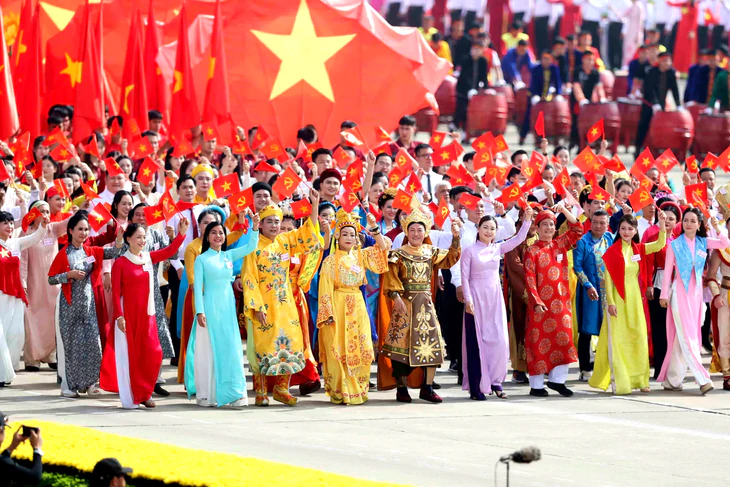

Trao đổi với Tuổi Trẻ, PGS.TS Bùi Hoài Sơn, Ủy viên chuyên trách Ủy ban Văn hóa và Xã hội của Quốc hội, nhấn mạnh Nghị quyết Đại hội XIV và trước đó là Nghị quyết 80 của Bộ Chính trị đã cho thấy có sự đổi mới rất căn bản trong tư duy phát triển văn hóa.
Văn hóa không còn được nhìn nhận như một lĩnh vực đứng riêng bên cạnh kinh tế, xã hội, khoa học hay giáo dục, càng không phải là phần việc chỉ được quan tâm sau khi đã giải quyết xong các mục tiêu tăng trưởng.
Văn hóa được xác lập là nền tảng tinh thần, trụ cột phát triển, nguồn lực nội sinh và động lực tăng trưởng mới, tức văn hóa phải hiện diện ngay từ đầu trong quá trình lựa chọn mô hình phát triển và hoạch định chính sách quốc gia.
Theo đại biểu Bùi Hoài Sơn, văn hóa không chỉ tạo ra các tác phẩm, sự kiện hay thiết chế, mà còn góp phần hình thành con người, niềm tin xã hội, đạo đức kinh doanh, tinh thần đổi mới sáng tạo và khả năng gắn kết cộng đồng.
Văn hóa cần được nhìn nhận đồng thời ở cả giá trị tinh thần, giá trị xã hội và giá trị kinh tế.
Đầu tư cho văn hóa không phải là chi tiêu mang tính phúc lợi đơn thuần, mà là đầu tư cho chất lượng nguồn nhân lực, sức sáng tạo, thương hiệu quốc gia và khả năng cạnh tranh lâu dài.
Một điểm quan trọng là tư duy bảo tồn đã được mở rộng. Bảo tồn không chỉ là gìn giữ nguyên trạng, mà phải gắn với sáng tạo, giáo dục, công nghệ, du lịch và công nghiệp văn hóa, để di sản tiếp tục sống và tạo ra giá trị mới trong đời sống đương đại.
Ông cho rằng trong một thế giới biến động nhanh, sức bền của nền kinh tế không thể tách rời sức bền của hệ giá trị, bản sắc và niềm tin xã hội. Nghị quyết 80 cũng xác định phát triển văn hóa, con người là nền tảng, nguồn lực nội sinh, động lực và trụ cột của phát triển nhanh, bền vững.
Điều quan trọng là làm cho các giá trị tốt đẹp đi vào hành vi kinh tế, đạo đức công vụ, văn hóa doanh nghiệp, đổi mới sáng tạo và quản trị quốc gia. Văn hóa giúp tốc độ phát triển đi cùng, đúng hướng, để sự giàu có vật chất không tách rời sự giàu có về tinh thần.
Việt Nam sở hữu kho tàng văn hóa đặc biệt giàu có, từ di tích, di sản, lịch sử dựng nước - giữ nước đến ẩm thực, âm nhạc, mỹ thuật, thủ công, lễ hội và sự đa dạng của các vùng miền. Vấn đề đặt ra chính là khả năng chuyển chất liệu thành tài sản trí tuệ, sản phẩm sáng tạo, thương hiệu và thị trường còn chưa tương xứng.
Số liệu năm 2022 cho thấy các ngành công nghiệp văn hóa Việt Nam đóng góp khoảng 4,04% GDP. Nghị quyết 80 đặt mục tiêu 7% GDP vào năm 2030 và 9% vào năm 2045.
Muốn văn hóa đóng góp xứng đáng vào mục tiêu tăng trưởng 2 con số, theo PGS.TS Bùi Hoài Sơn, trước hết cần thay đổi cách đo lường và nhìn nhận đóng góp của văn hóa.
Nếu chỉ tính doanh thu hay giá trị gia tăng trực tiếp sẽ đánh giá thấp vai trò của văn hóa. Do đó cần tính cả hiệu ứng lan tỏa đối với du lịch, thương mại, kinh tế đêm, công nghệ và quảng bá quốc gia, cùng những giá trị vô hình như niềm tin xã hội, năng lực sáng tạo và sức mạnh mềm.
Thứ hai, cần coi tài nguyên văn hóa là một loại tài sản phát triển đặc biệt và tổ chức khai thác theo chuỗi giá trị. Số hóa di sản không nên dừng ở lưu trữ. Dữ liệu văn hóa phải trở thành nguyên liệu cho giáo dục, thiết kế, điện ảnh, trò chơi, trí tuệ nhân tạo và các sản phẩm sáng tạo.
Mỗi di sản hay câu chuyện lịch sử đều có thể là điểm khởi đầu của một hệ sinh thái nếu có bản quyền rõ ràng, công nghệ phù hợp và doanh nghiệp biết tổ chức thị trường.
Thứ ba, phải hình thành hệ sinh thái công nghiệp văn hóa đúng nghĩa. Nhà nước cần hoàn thiện thể chế, bảo vệ sở hữu trí tuệ, tạo dữ liệu và hạ tầng dùng chung, phát triển không gian sáng tạo, hỗ trợ vốn, các chính sách về đầu tư, thuế, nhân lực và mở rộng thị trường quốc tế.
Tiếp đó, doanh nghiệp sẽ tổ chức sản xuất, thương mại hóa, nghệ sĩ, người sáng tạo tạo giá trị, trường đại học, viện nghiên cứu cung cấp tri thức, nền tảng số mở rộng phân phối.
TS Nguyễn Đình Hậu, giảng viên Viện Đào tạo báo chí và truyền thông (Trường đại học Khoa học xã hội và Nhân văn, Đại học Quốc gia Hà Nội) nhấn mạnh mục tiêu tăng trưởng 2 con số có ý nghĩa hết sức quan trọng, thể hiện tầm nhìn, khát vọng lớn hướng tới một Việt Nam hùng cường và thịnh vượng.
Để thực hiện mục tiêu này, bên cạnh các nguồn lực thì báo chí, truyền thông góp phần quan trọng biến niềm tin thành nguồn lực phát triển, tăng hiệu quả, năng suất lao động.
Trước hết, báo chí góp phần tạo dựng đồng thuận xã hội với các chủ trương phát triển đất nước. Kinh nghiệm cho thấy mọi chính sách, dù đúng đắn đến đâu, cũng cần được truyền thông đầy đủ để người dân, doanh nghiệp hiểu, ủng hộ và tham gia thực hiện.
Những năm gần đây, báo chí đã đồng hành với nhiều quyết sách lớn của đất nước như chuyển đổi số quốc gia, thúc đẩy khoa học, công nghệ, đổi mới sáng tạo, phát triển kinh tế xanh, cải cách thủ tục hành chính, xây dựng hạ tầng chiến lược, phát triển kinh tế tư nhân...
Không chỉ đưa tin đơn thuần, báo chí còn giải thích chính sách, phân tích tác động, phản ánh tâm tư nguyện vọng của người dân, doanh nghiệp, từ đó giúp các quyết sách đi vào cuộc sống.
Bên cạnh lan tỏa chủ trương chính sách, báo chí còn phát hiện, phản ánh những điểm nghẽn của nền kinh tế. Nhiều vấn đề liên quan đến thủ tục đầu tư, giải ngân vốn công, cải cách hành chính, môi trường kinh doanh, thị trường bất động sản hay những khó khăn của doanh nghiệp được báo chí đưa lên công luận, từ đó giúp các cơ quan chức năng nắm bắt, nhanh chóng vào cuộc tháo gỡ.
Cùng với đó, báo chí còn đóng vai trò quảng bá thương hiệu quốc gia, doanh nghiệp, thu hút đầu tư...
Ngoài góp phần thúc đẩy tăng trưởng, dù còn nhiều khó khăn nhưng theo TS Hậu, thời gian qua chính một số cơ quan báo chí cũng đang làm tốt kinh tế báo chí trong thời đại số. Từ đó đóng góp ngân sách cho Nhà nước, thúc đẩy phát triển.
"Mục tiêu tăng trưởng 2 con số đặt ra những yêu cầu và với báo chí đã thể hiện rõ không chỉ là người quan sát tăng trưởng, mà còn là người góp phần kiến tạo tăng trưởng", TS Hậu nói.